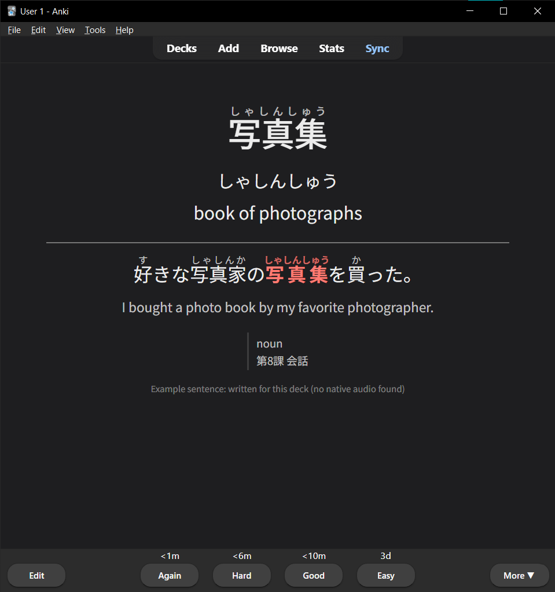

← All projects
Software · Japanese
Joshi's Jisho ジョシの辞書
A Japanese–English dictionary of technical and engineering terms, built from real machining patents so the vocabulary matches what's actually used on the shop floor and in the spec sheets.
- Terms
- 779 (draft)
- Source
- 4 machining patents
- Stack
- Python · Astro · GitHub Actions
- Export
- Anki decks
Why I built it
One paragraph in your own words: general dictionaries miss shop-floor and patent vocabulary, and you needed it for engineering work in Japanese.
How it works
- A patent vocabulary extractor pulls candidate terms from Japanese patent text.
- Each term is stored as its own YAML file, checked against a JSON Schema by a validator that runs on every pull request.
- A build script compiles the data into a searchable Astro site that matches kanji, kana, romaji, and English, with an EN/JA interface.
- Study lists export straight to Anki.
Anki cards


Add a screenshot of the search page once the dictionary site is live.